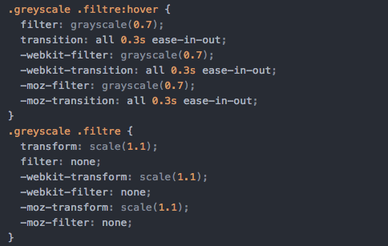
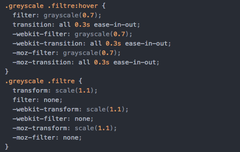
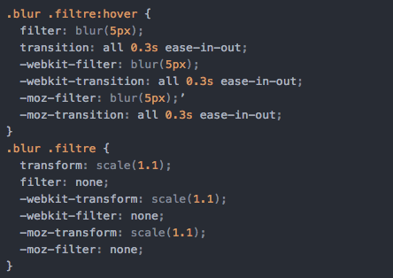
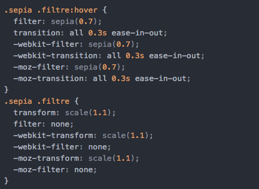
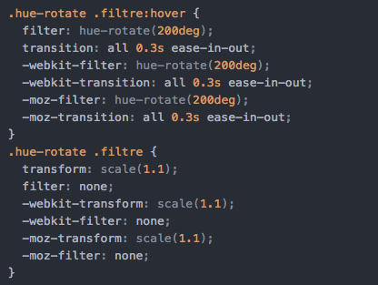
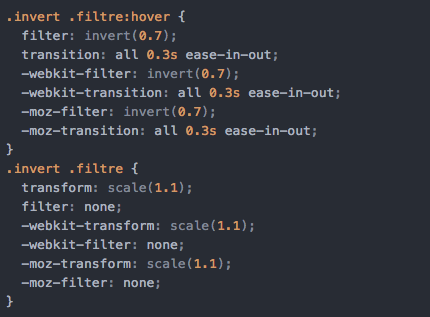
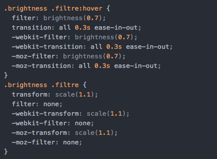
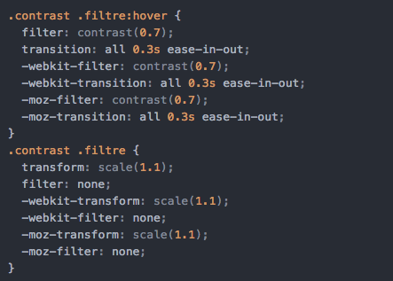

Greyscale :
Cette propriété va convertir votre image en nuances de gris (noir et blanc).
La valeur du filtre peut-être soit un pourcentage, soit un nombre décimal. La valeur 0 ou 0% n'aura aucun effet, il s'agit de la valeur par défaut (none) et 1 ou 100% transformera l'image en noir et blanc total.
 

Blur :
Cet effet appliquera à votre image un flou qui sera plus ou moins important en fonction de la valeur de la propriété.
Le flou sera mesuré en pixels ; plus la valeur sera grande et plus l'image sera floutée.

Saturate :
Cet effet ajoute de la saturation sur les couleurs de votre image.
La valeur de la propriété peut être un nombre décimal ou un pourcentage, sachant que la saturation par défaut est de 100%. Pour ajouter de la saturation il faut donc renseigner une valeur supérieure à 100%.

Sepia :
Cet effet va ajouter une teinte sepia à votre image ce qui donne l'impression que c'est une vieille photographie.
La valeur du filtre peut-être soit un pourcentage, soit un nombre décimal. La valeur 0 ou 0% n'aura aucun effet, il s'agit de la valeur par défaut (none) et 1 ou 100% transformera l'image en noir et blanc total.

Hue-rotate :
Cet effet va changer la couleur de l'image qui sera complètement différente en fonction du degré que vous affecterez en CSS.
La meilleure représentation de cet effet est de penser à une roue de spectres de couleur. La couleur de départ sera modifiée pour une nouvelle couleur qui correspondra à la valeur attribuée à la propriété hue-rotate.

Invert :
Cet effet va changer l'apparence de l'image qui ressemblera à un négatif (dans le temps où l'on développait encore nos photos).
La valeur du filtre peut-être soit un pourcentage, soit un nombre décimal. La valeur 0 ou 0% n'aura aucun effet, il s'agit de la valeur par défaut (none) et 1 ou 100% transformera l'image en noir et blanc total.

Brightness :
Cet effet permet de modifier la luminosité de l'image.
La valeur du filtre peut-être soit un pourcentage, soit un nombre décimal. La valeur 0 ou 0% n'aura aucun effet, il s'agit de la valeur par défaut (none) et 1 ou 100% transformera l'image en noir et blanc total.

:
Cet effet va modifier le contraste de l'image, c'est-à-dire la différence entre les zones sombres et les zones claires.
La valeur du filtre peut-être soit un pourcentage, soit un nombre décimal. La valeur 0 ou 0% n'aura aucun effet, il s'agit de la valeur par défaut (none) et 1 ou 100% transformera l'image en noir et blanc total.

Opacity :
Cette fonction permet de régler l'opacité de l'image d'entrée. La valeur de l'argument indique la force de l'opacité. Ainsi, une valeur de 0% rendra l'image complètement transparente et une valeur de 100% conservera l'image telle quelle. Les valeurs intermédiaires appliqueront des effets proportionnels. La valeur par défaut de l'argument est 1. Cette fonction est proche de la propriété opacity, toutefois, avec les filtres, certains navigateurs utilisent l'accélération matérielle, ce qui permet d'obtenir de meilleures performances.

Drop-shadow

Est-il possible de combiner des filtres ?
Oui, voici un exemple pratique.
Nous avons vu dans ce tutoriel les différents effets applicables aux images grâce à la propriété filter de CSS3. Vous pouvez vous amuser en appliquant ces filtres sur d'autres éléments par exemple !